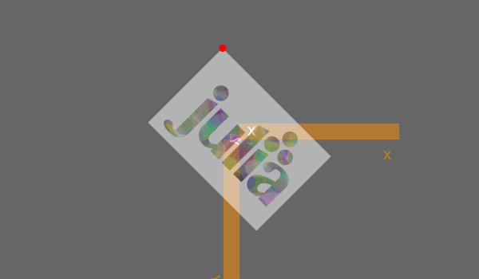
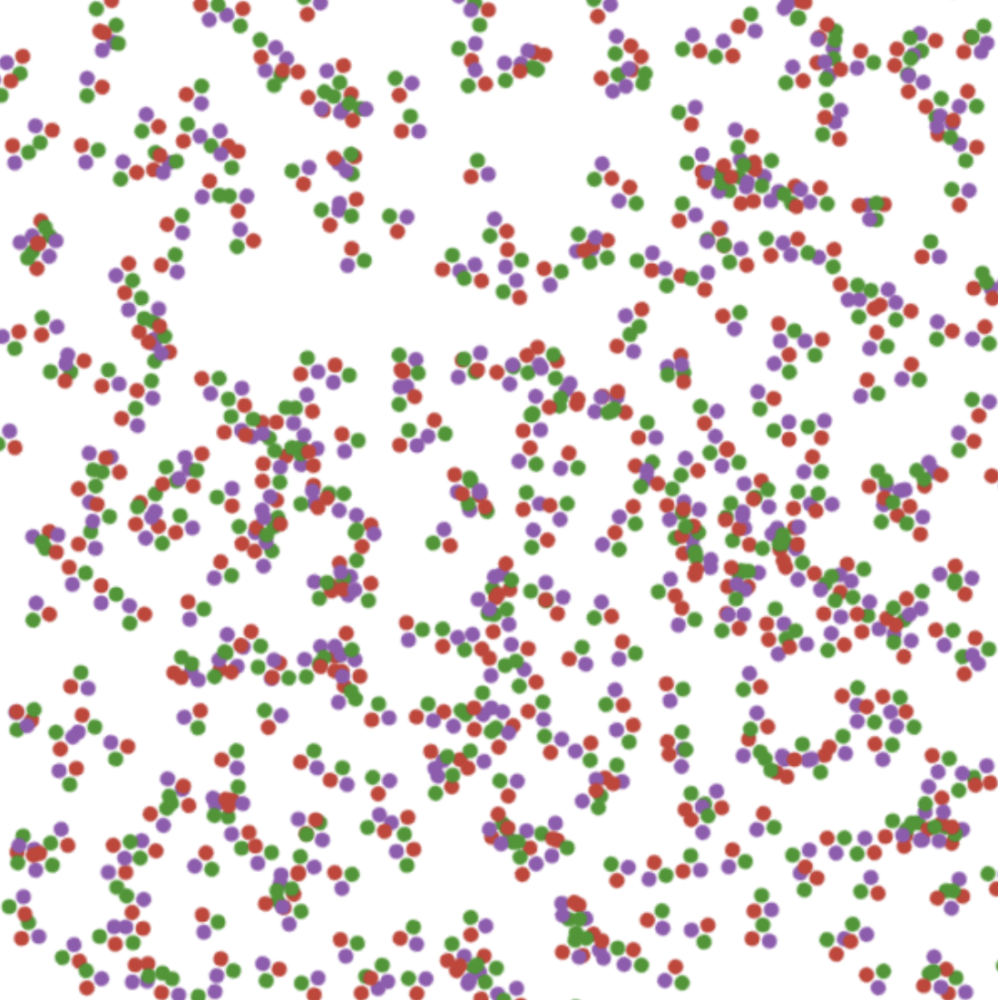
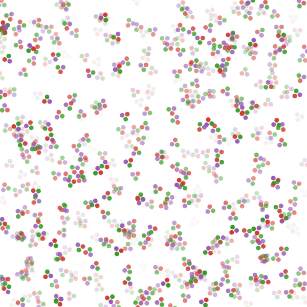
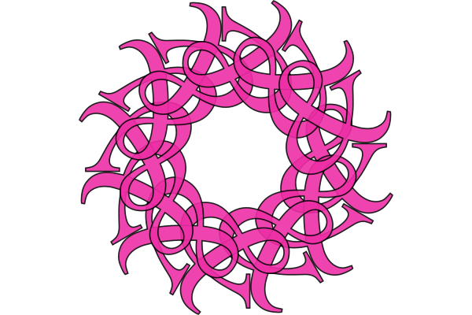
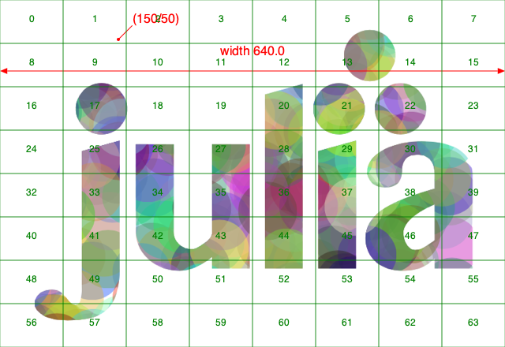
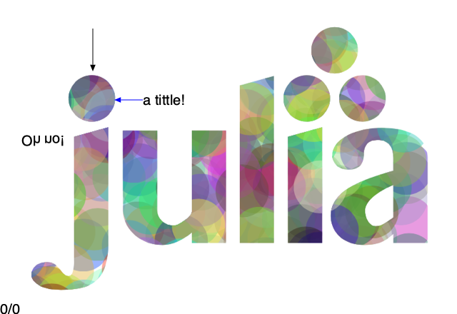

Placing images
Loading and placing PNG and SVG images
Luxor lets you place PNG and SVG images on the drawing. First, load an image:
- for PNG images, use
readpng(filename) - for SVG images, use
readsvg(filename)orreadsvg(string)
(JPEGs aren't supported.)
Then use placeimage to place the image by its top left corner at point pt, or use the centered=true keyword to place the image's center point there. Access the image's dimensions with .width and .height.
img = readpng("../assets/figures/julia-logo-mask.png")
w = img.width
h = img.height
rulers()
scale(0.3, 0.3)
rotate(π/4)
placeimage(img, Point(-w/2, -h/2), .5)
sethue("red")
circle(-w/2, -h/2, 15, :fill)
PNG images can be placed with varying opacity or transparency.
readsvg also lets you supply raw (or pure) SVG code in a string.
SVG images
To create an SVG image, using the Drawing(... :svg) or specify an SVG filename. To obtain the SVG source of a completed drawing, use svgstring.
For example, draw the Julia logo:
Drawing(500, 500, :svg)
origin()
julialogo()
finish()
s = svgstring()The SVG source code is now stored in s. You can examine or process it further:
eachmatch(r"rgb\\(.*?\\)", s) |> collect
5-element Vector{RegexMatch}:
RegexMatch("rgb(0%,0%,0%)")
RegexMatch("rgb(79.6%,23.5%,20%)")
RegexMatch("rgb(25.1%,38.8%,84.7%)")
RegexMatch("rgb(58.4%,34.5%,69.8%)")
RegexMatch("rgb(22%,59.6%,14.9%)")To display the image in a Jupyter or Pluto notebook, use the HTML function, or you can use the readsvg and placeimage functions in combination.
Placing an image matrix
You can also use placeimage to put image matrices on a drawing.
using Luxor
mat = @imagematrix begin
juliacircles(6)
end 40 40
@draw begin
for i in 1:500
pos = rand(BoundingBox())
@layer begin
translate(pos)
rotate(rand() * 2π)
placeimage(mat, centered = rand(Bool))
end
end
end
placeimage can also take in an optional argument alpha to change the opacity of the image matrix.

Clipping images
You can clip images. The following script repeatedly places the image using a circle to define a clipping path:

using Luxor
width, height = 4000, 4000
margin = 500
fname = "test-image.pdf"
Drawing(width, height, fname)
origin()
background("grey25")
setline(5)
sethue("green")
image = readpng(dirname(@__FILE__) * "../assets/figures/julia-logo-mask.png")
w = image.width
h = image.height
pagetiles = Tiler(width, height, 7, 9)
tw = pagetiles.tilewidth/2
for (pos, n) in pagetiles
circle(pos, tw, :stroke)
circle(pos, tw, :clip)
gsave()
translate(pos)
scale(.95, .95)
rotate(rand(0.0:π/8:2π))
placeimage(image, O, centered=true)
grestore()
clipreset()
end
finish()Transforming images
You can transform images by setting the current matrix, either with scale and rotate and similar, or by modifying it directly. This code scales and rotates an image made in an earlier chapter of this document around in a circle:
img = readpng(dirname(dirname(pathof(Luxor))) * "/docs/src/assets/figures/textoutlines.png")
w = img.width
h = img.height
for θ in 0:π/6:2π-π/6
gsave()
scale(.4, .4)
rotate(θ)
translate(300, 0)
placeimage(img, -w/2, -h/2, 0.9)
grestore()
end
Drawing on images
You sometimes want to draw over images, for example to annotate them with text or vector graphics. The things to be aware of are mostly to do with coordinates and transforms.
In these examples, we'll annotate a PNG file.
image = readpng("../assets/figures/julia-logo-mask.png")
w = image.width
h = image.height
# create a drawing surface of the same size
fname = "../assets/figures/drawing_on_images.png"
Drawing(w, h, fname)
# place the image on the Drawing - it's positioned by its top/left corner
placeimage(image, 0, 0)
# now you can annotate the image. The (0/0) is at the top left.
sethue("red")
setline(1)
fontsize(16)
circle(Point(150, 50), 2, :fill)
label("(150/50)", :NE, Point(150, 50), leader=true, offset=25)
arrow(Point(w/2, 90), Point(0, 90))
arrow(Point(w/2, 90), Point(w, 90))
text("width $w", Point(w/2, 70), halign=:center)
# to divide up the image into rectangular areas and number them,
# temporarily position the axes at the center:
@layer begin
setline(0.5)
sethue("green")
fontsize(12)
translate(w/2, h/2)
tiles = Tiler(w, h, 8, 8, margin=0)
for (pos, n) in tiles
box(pos, tiles.tilewidth, tiles.tileheight, :stroke)
text(string(n-1), pos, halign=:center)
end
end
Adding text to transformed images
The above approach works well, but suppose you want to locate the working origin at the lower left of the image, i.e. you want all coordinates to be relative to the bottom left corner of the image?
To do this, use translate and transform to modify the drawing space:
image = readpng("../assets/figures/julia-logo-mask.png")
w = image.width
h = image.height
fname = "../assets/figures/drawing_on_images_2.png"
Drawing(w, h, fname)
placeimage(image, 0, 0)
# Move the axes to the bottom:
translate(0, h)
# and reflect in the x-axis
transform([1 0 0 -1 0 0])
# now 0/0 is at the bottom left corner, and 100/100 is up and to the right.
sethue("blue")
arrow(Point(200, 300), Point(160, 300))
# However, don't draw text while flipped, because it will be reversed!
fontsize(20)
sethue("black")
text("Oh no!", Point(30, 250))
# To work around this, define a text function
# that flips the workspace over the x-axis just for the text:
function textoverlay(t, pos; kwargs...)
@layer begin
translate(pos)
transform([1 0 0 -1 0 0])
text(t, O; kwargs...)
end
end
textoverlay("a tittle!", Point(200, 300), halign=:left, valign=:middle)
textoverlay("0/0", O)
arrow(Point(130, 400), Point(130, 340))
Image compositing
You should be using Images.jl for most tasks involving image editing. But if you just need to composite images together, you can use the blending modes provided by setmode.
img = readpng("../assets/figures/textoutlines.png")
w = img.width
h = img.height
placeimage(img, -w/2, -h/2, .5)
setmode("saturate")
translate(50, 0)
placeimage(img, -w/2, -h/2, .5)